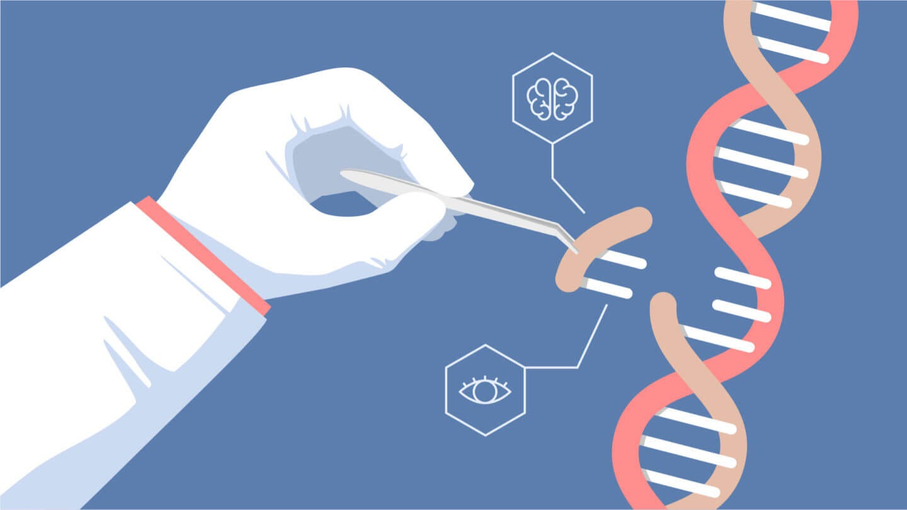
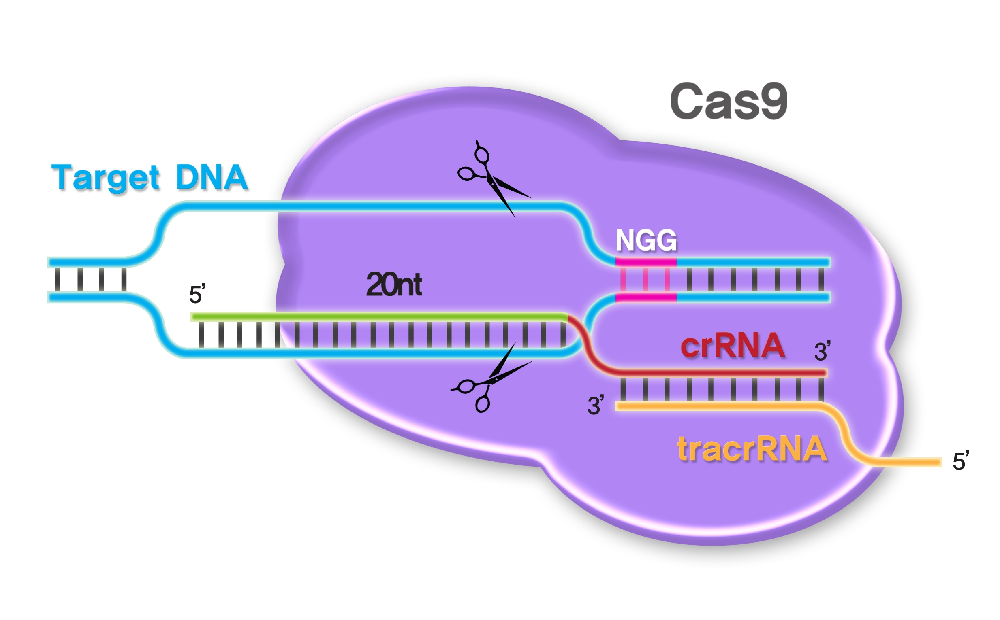
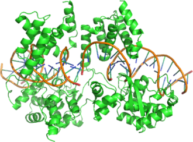
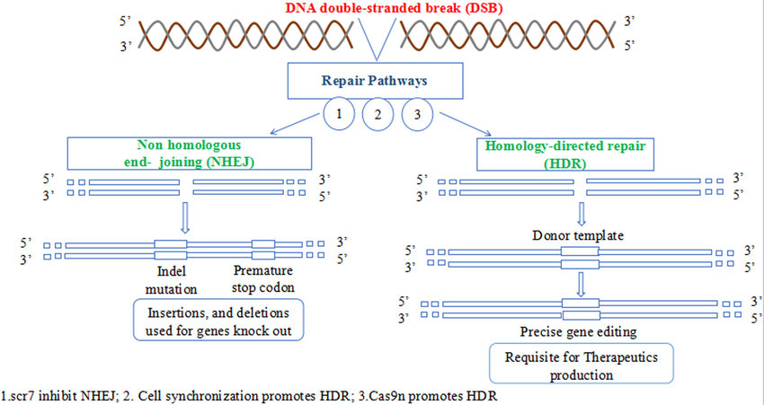
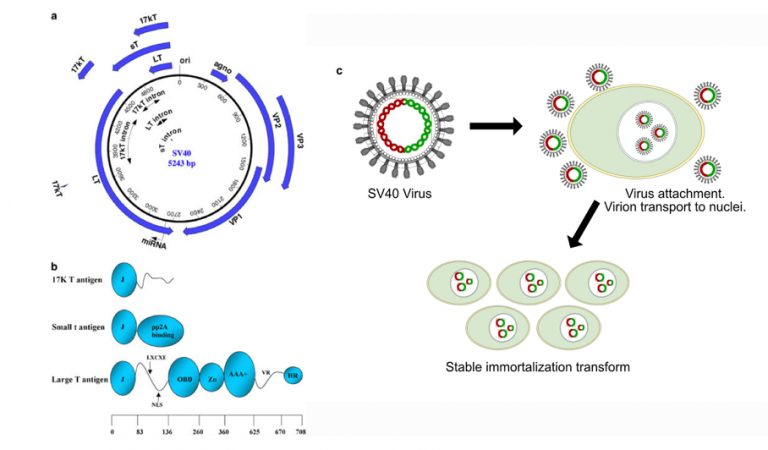

Introduction

Genetic engineering involves the direct manipulation of an organism's DNA, altering its genetic makeup to achieve desired
traits or outcomes. Scientists employ various techniques such as gene editing, gene insertion, and gene deletion to modify
genetic material.
Genetic engineering is the use of molecular biology technology to modify DNA sequence(s) in genomes, using a variety of approaches.
For example, homologous recombination can be used to target specific sequences in mouse embryonic stem (ES) cell genomes or other cultured cells, but it is cumbersome, poorly efficient, and relies on drug positive/negative selection in cell culture for success.
Other routinely applied methods include random integration of DNA after direct transfection (microinjection), transposon-mediated DNA insertion, or DNA insertion mediated by viral vectors for the production of transgenic mice and rats.
Random integration of DNA occurs more frequently than homologous recombination, but has numerous drawbacks, despite its efficiency. The most elegant and effective method is technology based on guided endonucleases, because these can target specific DNA sequences.
Since the advent of clustered regularly interspaced short palindromic repeats or CRISPR/Cas9 technology, endonuclease-mediated gene targeting has become the most widely applied method to engineer genomes, supplanting the use of zinc finger nucleases, transcription activator-like effector nucleases, and meganucleases.

Future improvements in CRISPR/Cas9 gene editing may be achieved by increasing the efficiency of homology-directed repair. Here, we describe principles of genetic engineering and detail:
- how common elements of current technologies include the need for a chromosome break to occur
- The use of specific and sensitive genotyping assays to detect altered genomes
- delivery modalities that impact characterization of gene modifications.
In summary, while some principles of genetic engineering remain steadfast, others change as technologies are ever-evolving and continue to revolutionize research in many fields.
Principles of Genetic Engineering
1. Types of Genetic Modifications
There are many types of genetic modifications that can be made to the genome. This encompasses knockouts (gene deletions), knockins (gene insertions), and sequence replacements, all precisely targeted. Deletions impact gene expression, with even slight changes altering protein structure/function. Insertions introduce new genetic elements, and knockins utilizing fluorescent markers can both silence and mark genes. Sequence replacements serve a dual purpose, like blocking one gene while activating another. Techniques like conditional alleles and site-specific recombinases (e.g., Cre, FLP) control gene activity. Inducible alleles remain inactive until activated by recombinases. Mouse models exemplify these strategies, aiding research endeavors by offering tools for gene manipulation and tissue-specific expression. Overall, these techniques hold immense potential for advancing our understanding of genetics and disease mechanisms.

2. Genetic Engineering with CRISPR/Cas9

Gene targeting using CRISPR/Cas9 involves inducing a double-strand DNA break in the target cell, leading to either nonhomologous end joining (NHEJ) repair or homology-directed repair (HDR). NHEJ often results in small insertions or deletions (indels) causing mRNA frame shifts and protein loss. HDR, involving a template, can insert modified genetic sequences flanked by homology arms. Applications include gene knockouts, point mutations, gene replacements, conditional genes, Cre-inducible genes, and large DNA deletions.
CRISPR/Cas9 gene editing follows several steps. A gene is selected, and the desired allele is specified. Single guide RNAs (gRNAs) are chosen using tools like CRISPOR, considering the protospacer-adjacent motif (PAM) and minimizing off-target effects. gRNAs can be chemically synthesized with improved stability. Cas9 protein variants are used for specificity, like Sigma-Aldrich's enhanced specificity Cas9 and Integrated DNA Technologies' high-fidelity Cas9. These engineered Cas9 versions, such as HF1 Cas9, hyperaccurate Cas9, and evolved Cas9, aim for greater precision.
To execute gene editing, gRNAs and Cas9 protein are combined and delivered to the target cell, inducing a chromosome break. This leads to gene knockout through frame shifts or DNA deletion. Successful implementation of CRISPR/Cas9-based modifications involves precise target selection, careful gRNA and Cas9 choice, and effective delivery methods.
2. Gene Editing in Immortalized Cell Lines
CRISPR/Cas9 gene editing encounters distinct challenges in immortalized cell lines compared to transgenic animal models. Cell lines vary in traits such as growth rates, chromosome anomalies, and DNA damage responses. In contrast to animal models, where single allele edits can be bred to homozygosity, cell line editing necessitates screening for homozygous gene edits due to allele modifications. Copy number variations within cell lines can hinder efficiency, while factors like aberrant chromosome counts and repetitive regions complicate PCR analysis of edits. Addressing these hurdles, employing next-generation sequencing (NGS) on clonal isolates aids in understanding copy number variations.

Diverse cell types mandate testing different CRISPR/Cas9 delivery methods. Viral or transposon-based approaches may lead to genome integration, causing sustained CRISPR/Cas9 expression and potential off-target effects. Varying efficiencies in transfection and electroporation depend on cell lines and CRISPR/Cas9 reagent forms. Subsequent to delivery, clonal isolation reveals edited cell lines, sometimes with unexpected phenotypes due to non-target gene edit events. Flow cytometry assists single-cell isolation, with adjustments needed for optimal cell viability. Unequal gene alleles in different clonal isolates and challenging single-cell growth further complicate isolation. However, innovations like fluorescent Cas9 and RNAs, Cas9-nickases, and Cas9-base editing enzyme fusions offer promise in mitigating these challenges, streamlining cell line editing.
Related:-